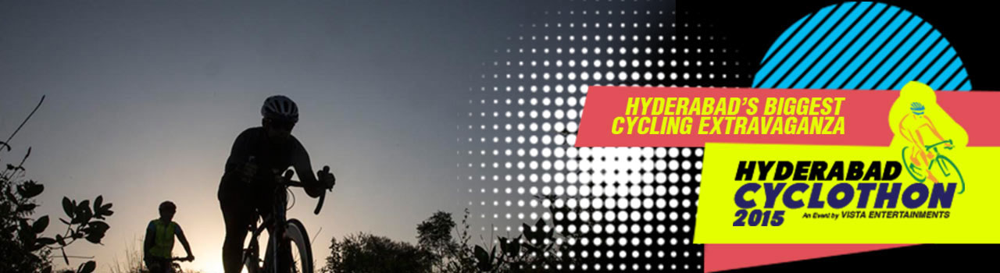

BOOK NOW
CYCLOTHON (SPORTS) 80♥
ABOUTS
Vista Entertainments in association with Times of India presents the Hyderabad Cyclothon 2015 and Hyderabad Safety Ride on 13th December 2015.
Synopsis
Bike fever has swept Hyderabad and the city is all set to celebrate all things cycling with the Hyderabad Cyclothon 2015. This is being held for the first time in Hyderabad and is a mixture of competitive and fun races and rides. The event allows you to push yourself to the utmost or enjoy the city's scenery on the ORR stretch with long, leisurely rides, as you cheer the competitive cyclists. This is an all inclusive event that aims to bring cyclists across all age groups, gender, abilities and skills to support the cause of cycling, road safety and healthy, green environs in the city.
There will be the following categories:
- 50 KM Competitive Open Timed Race for Men and Women
One of the key highlights of the India Cyclothon, the competitive timed race will be a showcase of the passion of seasoned cyclists. A test of power, endurance and skill. The race is divided into 2 categories: Masters and Juniors across categories for men and women.
- 25 KM Challenge Ride
Open to all types of cyclists seasoned and amateur, individual or a part of corporate team. This event is a great way to challenge yourself or advocate team spirit.
- 10 KM Family Fun Ride
Open to beginners who are not so regular cyclists to get on their bikes, who can now embark on an easy 10 km ride and also raise money for a cause or pedal for road users' safety and green environment. You can ride in costumes and promote the message of 'bikers' safety'.
- 2 KM Kids Ride
This is the perfect event to get kids excited about the sport of cycling. Get them all to the stadium and watch them ride away. Here, each kid is a winner.
- 2 KM Ride for Specially Abled Persons
There will also be a 2 km event for specially abled persons. Kindly provide the certificate of physical disability from the concerned authority.
The event will get flagged off from the Gachibowli Stadium, cycling through IT Hub of Hyderabad then onto ORR-service roads and will terminate at the same venue. We have already got the approval from the Police department that the complete road on the route would be closed to general traffic during the cyclothon.
Vista is also tying up with some charities where every participant can contribute to any of the charities of their choice with an amount of their choice. This is purely optional The charities are:
- Teach For Change, which is an initiative of the Passionate Foundation and has dedicated volunteers who teach leadership skills and English language, in Government schools.
- We Believe, an NGO which runs orphanages for young children and also provides skill development or education to underprivileged women to make them stand on their own feet.
- Heal-A-Child Foundation, an NGO dealing with saving sick children who may not survive, not because of their illness but because their families cannot afford to pay for the medical expenses.
- Project 511, an initiative of Hyderabad Round Table No. 8 Charitable Trust is aimed at improving learning ability in government schools and is currently supporting more than 2 lakh children studying in 1022 Government Schools.
NOTE : Flag-off timings will be as follows:
- 50 kms - 6.00 AM
- 25 kms - 7.00 AM
- 10 kms - 7.30 AM
- 2 kms - 8.00 AM
Reporting time will be 30 mins before each flag-off as above.
Each participant will get the following:
- An event T-shirt
- Bib with Number
- Timing Chip (NA for 10 Km and 2Km)
- Snack box at the end of the event.
- E certificate
- Medal
VENUE:Old Mumbai Road, Gachibowli, Hyderabad, Telangana 500032, India